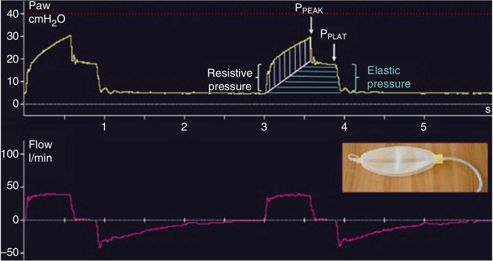

در کنترل حجمی با شدت جریان مربع شکل، چنانچه تنها هر دو جزء مدل یعنی مقاومت و الاستانس وجود داشته باشد (به عنوان مثال لوله تراشه و بالون هر دو باشد)، در این صورت منحنی فشار یک افزایش سریع اولیه ناشی از مقاومت دارد (فشار مقاومتی)، و بدنبال آن افزایش تدریجی و خطی در فشار در طول دم روی میدهد که شیب آن بستگی به الاستانس سیستم تنفسی دارد (فشار الاستیکی). همچنانکه در معادله فشار مشهود است، فشار تابعی از کمپلیانس، حجم جاری، مقاومت و شدت جریان می باشد.

در کنترل حجمی، منحنی فشار در طول دم تحت تاثیر کدام قرار میگیرد:
۱ - حجم جاری
۲ - شدت جریان
۳ - مقاومت
۴ - کمپلیانس
۵ - تمام موارد فوق